Путь «Колесо Фортуны»
От слабой к сильной: Seq 9 «Монстр» → Seq 1 «Змей Меркурия». Сменить этот путь на другой нельзя.
| Seq | Последовательность | Ступень сервера |
|---|---|---|
| 9 | Монстр | II |
| 8 | Робот | III |
| 7 | Счастливчик | IV |
| 6 | Жрец Бедствий | V |
| 5 | Победитель | VI |
| 4 | Маг Несчастий | VII |
| 3 | Идущий в Хаосе | VIII |
| 2 | Прорицатель | — |
| 1 | Змей Меркурия | — |
У каждой последовательности: зелье и его ингредиенты (главный — первым), способности, которые она открывает, и отыгрыш — действия, которые переваривают зелье. Ингредиенты указаны с двумя самыми доступными источниками; все — по ссылке. Ингредиенты Seq 9–6 этого пути бывают и в товарах у жителя Торговец Потусторонних — у каждого по 2 случайных предложения на уровень (цены).
Seq 9 · Монстр
Зелье  Монстр Зелье, формула
Монстр Зелье, формула  Монстр Рецепт зелья (Последовательность 9). Эта Seq нужна для ступени II.
Монстр Рецепт зелья (Последовательность 9). Эта Seq нужна для ступени II.
Ингредиенты
- Серебряный четырёхлистный клевер — сундук: Постройки Мира духов — 38 %; существо мода: Кролик знаний (водится: Мир духов) — 49 % за убийство. Все источники (3)
- Остаточный порошок Призрака в плаще — крафт: верстак; существо мода: Призрак (водится: Мир духов, Подземный мир; приходит и Ночью Мира духов) — 15 % за убийство. Все источники (3)
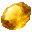
Цитрин — крафт: верстак; сундук: Постройки Мира духов — 36 %. Все источники (4)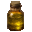
Эфирное масло лиственницы — пустая бутылка: Еловое бревно (биом «тайга») — 60 % за попытку, бутылка остывает 1 с. Все источники (2) Нить — обычный предмет
Нить — обычный предмет
Способности
- Медитация — Медитировать, восполняя духовность
- Духовное зрение
- Физическое усиление (пассивная)
Отыгрыш — переваривание за действие и перерыв между засчитанными:
- Использовать окружение — 0,95 %, раз в 15 с
- Посмотреть в подзорную трубу — 0,95 %, раз в 8 с
- Поймать рыбу — 0,47 %, раз в 10 с
- Убить голыми руками — 0,76 %, раз в 5 с
- Съесть гнилую плоть — 0,47 %, раз в 5 с
- Бежать — 0,19 %, раз в 5 с
- Стоять в полной темноте — 0,19 %, раз в 15 с
Seq 8 · Робот
Зелье 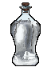 Робот Рецепт зелья (Последовательность 8). Эта Seq нужна для ступени III.
Робот Рецепт зелья (Последовательность 8). Эта Seq нужна для ступени III.
Ингредиенты
 Кристалл юного единорога — крафт: верстак; сундук: Постройки Мира духов — 29 %. Все источники (4)
Кристалл юного единорога — крафт: верстак; сундук: Постройки Мира духов — 29 %. Все источники (4) Трут — блок: Мёртвый куст, Блок сушёной ламинарии — 30 % за блок; сундук: Постройки Мира духов — 34 %. Все источники (3)
Трут — блок: Мёртвый куст, Блок сушёной ламинарии — 30 % за блок; сундук: Постройки Мира духов — 34 %. Все источники (3) Кровь Крысы-пожирательницы снов — пустая бутылка: Летучая мышь — 40 % за попытку, бутылка остывает 5 с; существо мода: Демон знания (водится: Мир духов, океаны; приходит и Ночью Мира духов) — 14 % за убийство. Все источники (3)
Кровь Крысы-пожирательницы снов — пустая бутылка: Летучая мышь — 40 % за попытку, бутылка остывает 5 с; существо мода: Демон знания (водится: Мир духов, океаны; приходит и Ночью Мира духов) — 14 % за убийство. Все источники (3) Лишённое духовности порочное дыхание — пустая бутылка: Огонь душ (в биоме: Долина песка душ) — 50 % за попытку, бутылка остывает 2 с; существо мода: Призрак (водится: Мир духов, Подземный мир; приходит и Ночью Мира духов) — 11 % за убийство. Все источники (3)
Лишённое духовности порочное дыхание — пустая бутылка: Огонь душ (в биоме: Долина песка душ) — 50 % за попытку, бутылка остывает 2 с; существо мода: Призрак (водится: Мир духов, Подземный мир; приходит и Ночью Мира духов) — 11 % за убийство. Все источники (3) Кожа — обычный предмет
Кожа — обычный предмет
Способности
- Гадание
- Восприятие удачи
Отыгрыш — переваривание за действие и перерыв между засчитанными:
- Переплавить предмет — 0,84 %, раз в 10 с
- Добыть руду — 0,84 %, раз в 10 с
- Создать железный инструмент — 0,42 %, раз в 15 с
- Использовать наковальню — 0,5 %, раз в 10 с
- Использовать верстак — 0,25 %, раз в 10 с
- Создать незеритовый инструмент — 0,67 %, раз в 30 с
Seq 7 · Счастливчик
Зелье 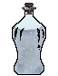 Счастливчик Рецепт зелья (Последовательность 7). Эта Seq нужна для ступени IV.
Счастливчик Рецепт зелья (Последовательность 7). Эта Seq нужна для ступени IV.
Ингредиенты
 Кристалл божественного благословения — сундук: Древний город, Древний город (ледник) — 20 %; сундук: Постройки Мира духов — 24 %. Все источники (4)
Кристалл божественного благословения — сундук: Древний город, Древний город (ледник) — 20 %; сундук: Постройки Мира духов — 24 %. Все источники (4) Целестин — блок: Лазуритовая руда, Глубинносланцевая лазуритовая руда (только природный блок) — 12 % за блок; сундук: Постройки Мира духов — 22 %. Все источники (4)
Целестин — блок: Лазуритовая руда, Глубинносланцевая лазуритовая руда (только природный блок) — 12 % за блок; сундук: Постройки Мира духов — 22 %. Все источники (4) Гидролат лаванды — пустая бутылка: Лук-батун — 60 % за попытку, бутылка остывает 1 с. Все источники (2)
Гидролат лаванды — пустая бутылка: Лук-батун — 60 % за попытку, бутылка остывает 1 с. Все источники (2) Чужие слёзы о разбитых идеалах — пустая бутылка: Плачущий обсидиан — 100 % за попытку, бутылка остывает 10 с. Все источники (2)
Чужие слёзы о разбитых идеалах — пустая бутылка: Плачущий обсидиан — 100 % за попытку, бутылка остывает 10 с. Все источники (2) Сгусток слизи — обычный предмет
Сгусток слизи — обычный предмет
Способности
- Пассивная удача (пассивная) — Пассивная удача, растущая с последовательностью
Отыгрыш — переваривание за действие и перерыв между засчитанными:
- Убить при низком здоровье — 1,1 %, раз в 2 с
- Убить, будучи в меньшинстве — 0,74 %, раз в 5 с
- Съесть подозрительное рагу — 0,37 %, раз в 5 с
- Выудить сокровище — 0,74 %, раз в 20 с
- Подобрать золото — 0,37 %, раз в 5 с
Seq 6 · Жрец Бедствий
Зелье 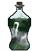 Жрец Бедствий Рецепт зелья (Последовательность 6). Эта Seq нужна для ступени V.
Жрец Бедствий Рецепт зелья (Последовательность 6). Эта Seq нужна для ступени V.
Ингредиенты
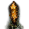
Кристаллическое ядро феникса бедствия — существо мода: Дервиш (водится: Мир духов; приходит и Ночью Мира духов) — 17 % за убийство. Все источники (2)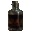
Кровь Похитителя душ — пустая бутылка: Зомбифицированный пиглин — 35 % за попытку, бутылка остывает 5 с; существо мода: Призрак (водится: Мир духов, Подземный мир; приходит и Ночью Мира духов) — 7,3 % за убийство. Все источники (3)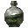
Выделения злого насекомого-кукловода — крафт: верстак; сундук: Постройки Мира духов — 17 %. Все источники (4) Аметист — блок: Аметистовая друза (только природный блок) — 20 % за блок; сундук: Постройки Мира духов — 15 %. Все источники (4)
Аметист — блок: Аметистовая друза (только природный блок) — 20 % за блок; сундук: Постройки Мира духов — 15 %. Все источники (4) Слеза гаста — обычный предмет
Слеза гаста — обычный предмет
Способности
- Буря психики — Создать область, в которой враги теряют контроль
- Притяжение бедствий — Навлечь бедствие на себя и врагов
- Притяжение бедствий (пассивная)
Отыгрыш — переваривание за действие и перерыв между засчитанными:
- Атаковать более сильного моба — 0,63 %, раз в 5 с
- Убить горящего моба — 0,63 %, раз в 5 с
- Поставить динамит — 0,63 %, раз в 10 с
- Поджечь — 0,38 %, раз в 5 с
- Использовать маяк — 0,38 %, раз в 30 с
- Убить под дождём — 0,38 %, раз в 5 с
Seq 5 · Победитель
Зелье 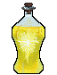 Победитель Рецепт зелья (Последовательность 5). Эта Seq нужна для ступени VI.
Победитель Рецепт зелья (Последовательность 5). Эта Seq нужна для ступени VI.
Ингредиенты
- Сердце синепятнистой огненной птицы — существо мода: Дервиш (водится: Мир духов; приходит и Ночью Мира духов) — 12 % за убийство.
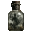
Заточённая душа — добыча: Визер-скелет (во второй руке пустая бутылка, она тратится) — 12 % за убийство игроком; сундук: Постройки Мира духов — 15 %. Все источники (3)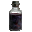
Кровь Болотного великана — пустая бутылка: Ведьма — 25 % за попытку, бутылка остывает 5 с; сундук: Постройки Мира духов — 11 %. Все источники (3)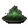
Грибной саван Богохульного жреца — блок: Блок красного гриба, Блок коричневого гриба (ножницами; в биоме: Тёмный лес; только природный блок) — 0,8 % за блок; сундук: Постройки Мира духов — 7,9 %. Все источники (3) Огненный порошок — обычный предмет
Огненный порошок — обычный предмет
Способности
- Высвобождение удачи — Высвободить всю накопленную удачу
- Дар несчастья — Одарить врагов несчастьем
- Пассивное накопление удачи (пассивная) — Пассивно накапливать удачу
Отыгрыш — переваривание за действие и перерыв между засчитанными:
- Поймать рыбу — 0,53 %, раз в 10 с
- Собрать урожай — 0,53 %, раз в 10 с
- Съесть подозрительное рагу — 0,26 %, раз в 5 с
- Убить сильного моба — 0,42 %, раз в 5 с
- Убить при полном здоровье — 0,32 %, раз в 5 с
- Выудить сокровище — 0,42 %, раз в 20 с
- Получить уровень опыта — 0,26 %, раз в 30 с
Seq 4 · Маг Несчастий
Зелье 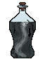 Маг Несчастий Рецепт зелья (Последовательность 4). Эта Seq нужна для ступени VII.
Маг Несчастий Рецепт зелья (Последовательность 4). Эта Seq нужна для ступени VII.
Ингредиенты
- Цветок доброй удачи — сундук: Постройки Мира духов — 6,2 %; существо мода: Кролик знаний (водится: Мир духов) — 13 % за убийство.
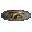
Золото — крафт: камнерез; сундук: Постройки Мира духов — 35 %. Все источники (4) Гидролат водяной фиалки — пустая бутылка: Синяя орхидея (в биоме: Болото, Мангровое болото) — 25 % за попытку, бутылка остывает 2 с.
Гидролат водяной фиалки — пустая бутылка: Синяя орхидея (в биоме: Болото, Мангровое болото) — 25 % за попытку, бутылка остывает 2 с.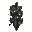
Призраки Мира духов, погибшие от обмана восходящего — существо мода: Призрак (водится: Мир духов, Подземный мир; приходит и Ночью Мира духов) — 7,3 % за убийство. Кусочек золота — обычный предмет
Кусочек золота — обычный предмет
Способности
- Проклятие несчастья — Проклясть врагов несчастьем
- Мифическая форма
- Поле несчастий — Создать область несчастий
- Благословение — Даровать союзникам благословение
Отыгрыш — переваривание за действие и перерыв между засчитанными:
- Убить при низком здоровье — 0,84 %, раз в 2 с
- Атаковать более сильного моба — 0,42 %, раз в 5 с
- Применить «Поле несчастий» — 0,84 %, раз в 20 с
- Получить урон — 0,13 %, раз в 5 с
- Бросить взрывное зелье — 0,25 %, раз в 5 с
Seq 3 · Идущий в Хаосе
Зелье 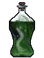 Идущий в Хаосе Рецепт зелья (Последовательность 3). Эта Seq нужна для ступени VIII.
Идущий в Хаосе Рецепт зелья (Последовательность 3). Эта Seq нужна для ступени VIII.
Ингредиенты
- Мозг четырёхухой гигантской обезьяны — сундук: Постройки Мира духов — 2,1 %; существо мода: Асман (водится: Мир духов, океаны) — 26 % за убийство.
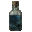
Вода древней реки — сундук: Постройки Мира духов — 2,1 %; существо мода: Погибель (водится: Мир духов; приходит и Ночью Мира духов) — 5 % за убийство.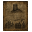
Ложная история, принятая за правду — существо мода: Демон знания (водится: Мир духов, океаны; приходит и Ночью Мира духов) — 2,9 % за убийство.- Старинные часы — сундук: Постройки Мира духов — 5,6–6,9 %; существо мода: Погибель (водится: Мир духов; приходит и Ночью Мира духов) — 1,7 % за убийство.
 Железный слиток — обычный предмет
Железный слиток — обычный предмет
Способности
- Духовное крещение — Очистить и успокоить дух цели, снимая все ментальные эффекты
Отыгрыш — переваривание за действие и перерыв между засчитанными:
- Убить, будучи в меньшинстве — 0,47 %, раз в 5 с
- Убить при низком здоровье — 0,47 %, раз в 2 с
- Применить «Духовное крещение» — 0,63 %, раз в 20 с
- Съесть подозрительное рагу — 0,19 %, раз в 5 с
- Съесть плод хоруса — 0,19 %, раз в 5 с
Seq 2 · Прорицатель
Зелье 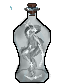 Прорицатель Рецепт зелья (Последовательность 2).
Прорицатель Рецепт зелья (Последовательность 2).
Ингредиенты
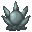
Прорицатель Характеристика Потустороннего (Последовательность 2) — характеристика Потустороннего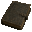
Потрёпанный альманах — существо мода: Демон знания (водится: Мир духов, океаны; приходит и Ночью Мира духов) — 0,95 % за убийство.- Отрезок сокрытой судьбы — существо мода: Погибель (водится: Мир духов; приходит и Ночью Мира духов) — 1,7 % за убийство.
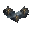
Огни, извлечённые из Реки судьбы — существо мода: Погибель (водится: Мир духов; приходит и Ночью Мира духов) — 1,7 % за убийство. Медный слиток — обычный предмет
Медный слиток — обычный предмет
Способности
- Власть ангела — Ангельская сила: странствуйте по Миру духов и сокрушайте артефакты
- Слова несчастья — Оставить слова несчастья, навлекающие великое несчастье на всякого, кто подойдёт к ним
- Пророчество — Изречь пророчество. Сказанное, оно с высокой вероятностью сбудется. Для подробного описания примените крадучись.
Отыгрыш — переваривание за действие и перерыв между засчитанными:
- Использовать картографический стол — 0,21 %, раз в 10 с
- Взглянуть на компас — 0,11 %, раз в 8 с
- Применить «Пророчество» — 0,42 %, раз в 20 с
- Взглянуть на часы — 0,11 %, раз в 8 с
- Использовать датчик дневного света — 0,084 %, раз в 15 с
- Прочитать подписанную книгу — 0,11 %, раз в 20 с
Seq 1 · Змей Меркурия
Зелье 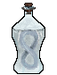 Змей Меркурия Рецепт зелья (Последовательность 1).
Змей Меркурия Рецепт зелья (Последовательность 1).
Ингредиенты
 Змей Меркурия Характеристика Потустороннего (Последовательность 1) — характеристика Потустороннего
Змей Меркурия Характеристика Потустороннего (Последовательность 1) — характеристика Потустороннего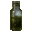
Настой ночной ванили — добыча: Фантом (убить игроком) — 8 % за убийство. Все источники (2)- Листья золотой мяты — сундук: Бастион (сокровищница) — 50 %; сундук: Бастион, Бастион (мост), Бастион (стойло хоглинов) — 20 %. Все источники (4)
- Ядовитый болиголов — добыча: Ведьма (убить игроком) — 8 % за убийство; сундук: Постройки Мира духов — 30 %. Все источники (3)
 Кристалл призмарина — обычный предмет
Кристалл призмарина — обычный предмет
Способности
- Цикл судьбы — Создать в области цикл судьбы. При срабатывании всё вернётся в то состояние, в каком было при создании цикла
Отыгрыш — переваривание за действие и перерыв между засчитанными:
- Убить сильного моба — 0,16 %, раз в 5 с
- Съесть золотое яблоко — 0,11 %, раз в 10 с
- Применить «Цикл судьбы» — 0,32 %, раз в 20 с
- Встретить рассвет — 0,053 %, раз в 1 мин